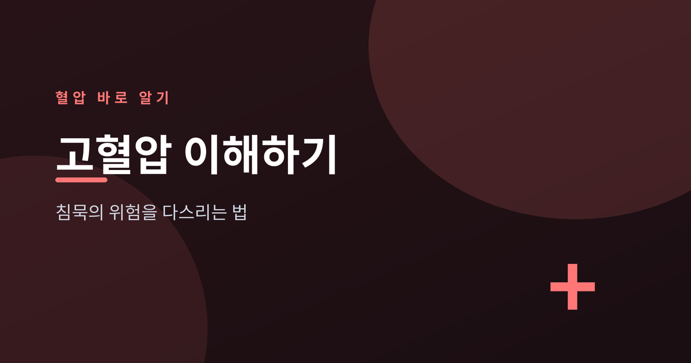
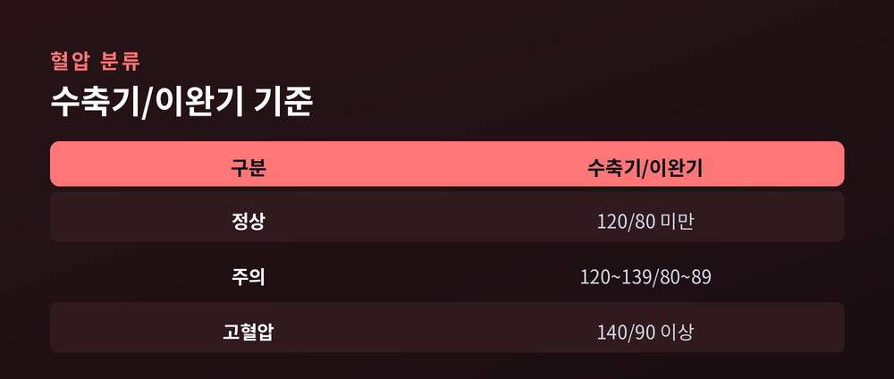
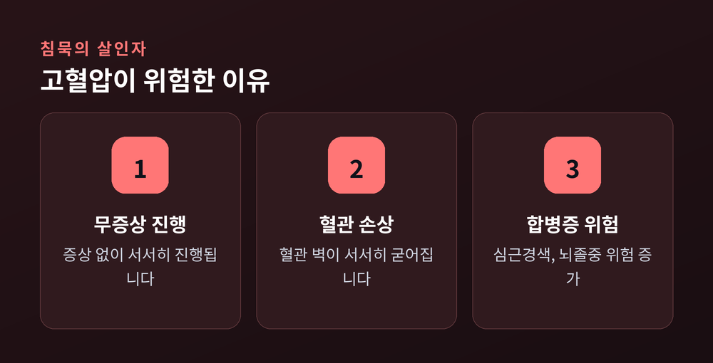
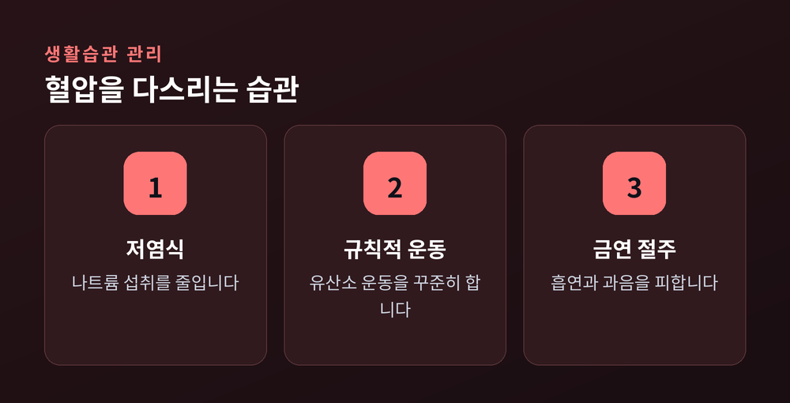

고혈압, 침묵의 위험을 다스리는 법

건강검진 결과지에서 혈압 수치를 보고도, 그 의미를 정확히 아는 분은 많지 않습니다. 혈압은 심장이 뿜어낸 혈액이 혈관 벽에 가하는 압력을 말합니다. 이 수치는 우리 몸의 순환계가 얼마나 건강하게 작동하는지 보여주는 가장 기본적인 지표입니다. 오늘은 혈압의 기본 개념과 고혈압이 왜 위험한지, 그리고 일상에서 어떻게 관리할 수 있는지 차분히 짚어보겠습니다.
혈압은 두 가지 숫자로 표현됩니다. 하나는 수축기 혈압으로, 심장이 수축하며 혈액을 밀어낼 때 혈관에 가해지는 최고 압력입니다. 다른 하나는 이완기 혈압으로, 심장이 이완하며 혈액을 채울 때의 최저 압력입니다. 혈압 단위는 mmHg(수은주밀리미터)를 사용하며, "120/80"처럼 수축기 수치를 앞에, 이완기 수치를 뒤에 표기합니다.

혈압은 하루 중에도 활동량, 스트레스, 카페인 섭취 등에 따라 계속 변동합니다. 그래서 한 번의 측정만으로 고혈압 여부를 단정하기는 어렵습니다. 여러 차례, 안정된 상태에서 측정한 값을 기준으로 판단하는 것이 일반적입니다.
혈압 분류 기준은 대한고혈압학회, 미국심장협회(AHA) 등 기관마다 세부적으로 차이가 있습니다. 다만 널리 알려진 대략적인 기준은 다음과 같습니다.
| 구분 | 수축기(mmHg) | 이완기(mmHg) |
|---|---|---|
| 정상 | 120 미만 | 80 미만 |
| 주의(고혈압 전단계) | 120~139 | 80~89 |
| 고혈압 | 140 이상 | 90 이상 |
기관에 따라 고혈압 전단계나 1기·2기 고혈압을 구분하는 세부 수치는 다를 수 있습니다. 정확한 판정은 반드시 의료진의 진료를 통해 받으시기 바랍니다.
고혈압은 흔히 침묵의 살인자로 불립니다. 대부분의 경우 특별한 증상 없이 서서히 진행되기 때문입니다. 혈압이 상당히 높아져도 두통이나 어지럼증조차 느끼지 못하는 경우가 많습니다. 문제는 증상이 없다고 해서 몸속에서 아무 일도 일어나지 않는 것은 아니라는 점입니다.

높은 혈압이 오랜 기간 지속되면 혈관 벽이 서서히 손상되고 굳어집니다. 이 상태가 방치되면 심근경색, 뇌졸중, 신장질환 등 심각한 합병증으로 이어질 수 있습니다. 증상이 나타났을 때는 이미 혈관 손상이 상당히 진행된 경우가 많아, 평소 정기적인 혈압 확인이 무엇보다 중요합니다.
혈압 관리의 시작은 거창한 처방이 아니라 일상의 작은 습관입니다. 대표적으로 다음과 같은 방법이 권장됩니다.

이와 함께 가정혈압 측정을 습관화하는 것이 좋습니다. 병원에서 측정하는 혈압은 긴장으로 인해 실제보다 높게 나올 수 있는데, 이를 '백의 고혈압'이라 부릅니다. 매일 같은 시간, 같은 자세로 집에서 혈압을 측정하고 기록하면 자신의 평소 혈압 패턴을 더 정확히 파악할 수 있습니다.
혈압은 특별한 증상 없이도 우리 몸에 조용히 영향을 미칩니다. 그렇기에 평소 관심을 가지고 관리하는 습관이 무엇보다 중요합니다. 다만 이 글에서 다룬 내용은 일반적인 건강 정보이며, 정확한 진단과 치료는 의료진과 상담하시기 바랍니다.